Teil 1 · Vom Hafen bis zur Taschengeld-Bucht
Talos und Talas Schatzbuch
Rätseln, rechnen, malen und mit deinen Eltern lernen, wie Geld funktioniert
Dieses Schatzbuch gehört:
Für Eltern
So benutzt ihr das Schatzbuch
Buch und App gehören zusammen
- Erst die App, dann das Buch: Oben auf jeder Seite steht, zu welcher Station sie gehört. Am besten macht Ihr Kind die Seite, nachdem es die Station in der App gespielt hat.
- Seekarte vorn im Buch: Ihr Kind malt jede geschaffte Station aus. So sieht es, wie weit es schon gesegelt ist.
- Schatzcode auf jeder Urkunde: Ihr Kind gibt ihn in der App in der Werft ein und bekommt ein besonderes Teil für sein Schiff.
- „Gemeinsam“-Seite in jedem Kapitel: Ihr Kind erklärt Ihnen, was es gelernt hat, und Sie erleben zusammen ein kleines Crew-Abenteuer. Den Code dafür finden Sie in der App im Leuchtturm unter „Gemeinsam“. Für jeden Code gibt es einen Crew-Stern.
Wie viel helfen?
- Die Aufgaben sind für Kinder von 8 bis 12 zum Alleinmachen gedacht.
- Es gibt keine Noten. Oft sind mehrere Antworten gut, wenn Ihr Kind sie begründen kann.
- Lösungen und Tipps stehen hinten im Buch.
Drucken
- A4, gern beidseitig. Die Seiten sind tintensparend gestaltet.
- Sie müssen nicht alles auf einmal drucken: Jedes Kapitel ist für sich vollständig.
- Die Ausmalseiten sind schwarz-weiß.
Gut zu wissen
Alle Beträge im Buch sind Übungsbeispiele. Taleria erklärt, wie Geld funktioniert, und ist keine Finanzberatung.
Inhalt
Deine Reise
Deine Seekarte zum AusmalenSeite 4
 Kapitel 1: Hafen von TaleriaSeite 5
Kapitel 1: Hafen von TaleriaSeite 5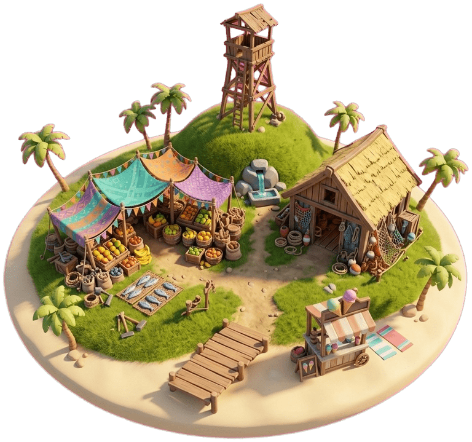
Kapitel 2: TauschinselSeite 14 Kapitel 3: WunschinselSeite 23
Kapitel 3: WunschinselSeite 23 Kapitel 4: Spar-InselSeite 32
Kapitel 4: Spar-InselSeite 32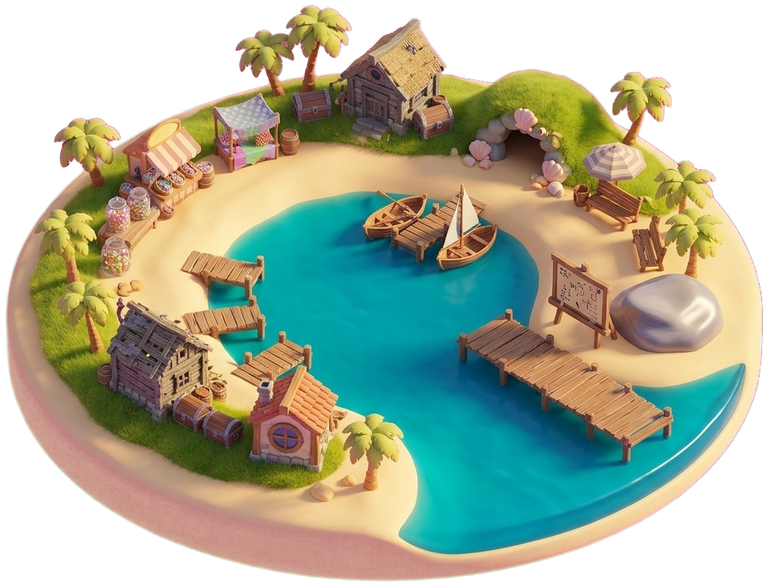
Kapitel 5: Taschengeld-BuchtSeite 41Lösungen für ElternSeite 55

Tala sagt: Auf jeder Insel wartet ein Kartenstück, eine Urkunde mit Schatzcode und ein Abenteuer mit deinen Eltern. Los geht's!
Seekarte
Wie weit bist du gesegelt?
Mal jeden Kreis aus, wenn du die Station in der App geschafft hast. ⛵ = Stopp auf See, ⚓ = Tauchgang, ★ = Prüfung der Insel.
1. Hafen von Taleria12⚓34⚓56⚓7★
2. Tauschinsel⛵⛵12⚓34⚓56⚓7★
3. Wunschinsel⛵⛵12⚓34⚓56⚓7★
4. Spar-Insel⛵⛵12⚓34⚓56⚓7★
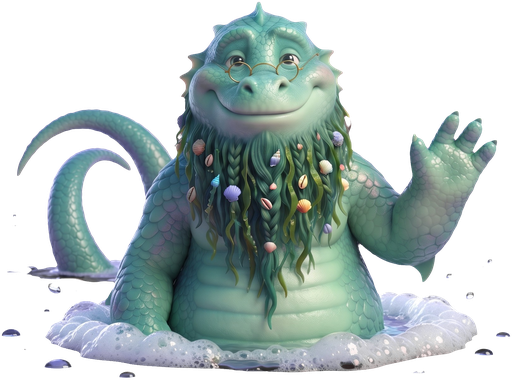
Meister Talerons PrüfungSiegel
5. Taschengeld-Bucht⛵⛵12⚓34⚓56⚓7★
Kapitel 1
Hafen von Taleria
Das lernst du hier
- Was Geld ist und warum es Tauschen leichter macht
- Woher Geld kommt und wie es früher aussah
- Warum Dinge etwas kosten und wie du Preise liest
So machst du dieses Kapitel
- Spiel in der App die Stationen auf der Insel Hafen von Taleria.
- Mach danach die passende Seite hier im Buch. Oben steht, zu welcher Station sie gehört.
- Mal auf der Seekarte vorn jede geschaffte Station aus.
- Am Ende: Erklär deinen Eltern, was du gelernt hast, und hol dir deine Urkunde mit Schatzcode.
Station 2 und 3
Was ist Geld?
1
Talas Tauschkette
Tala braucht ein Seil, hat aber nur einen Eimer. Greta gibt ihr Seil nur gegen Äpfel. Bruno gibt Äpfel nur gegen Fisch. Otti gibt Fisch nur gegen einen Eimer. Schreib in die Kästchen, wie Tala tauscht.
 Eimer
Eimer→
→
→
Wie oft musste Tala tauschen? Mal
2
Warum ist Geld praktischer als Tauschen?
Kreuze an, was stimmt.
Mit Geld muss der andere nicht genau das haben, was ich brauche.
Geld wird nie weniger wert.
Mit Geld kann ich Preise leicht vergleichen.
Geld kann man aufheben und später ausgeben.
3
Geld früher und heute
Bring die Zeit in die richtige Reihenfolge. Schreib 1 (ganz früher) bis 4 (heute) in die Kreise.
Münzen aus Metall
Mit Karte oder Handy bezahlen
Muscheln und Perlen als Geld
Geldscheine aus Papier

Frag deine Eltern: Womit habt ihr bezahlt, als ihr so alt wart wie ich?
Station 4
Münzen und Scheine
1
Wie viel ist das zusammen?
2 €+50 ct+20 ct=€
5 €+1 €+5 ct=€
10 €+2 €+10 ct+10 ct=€
2
Wechselgeld am Fischbrötchen-Stand
3
Möglichst wenige Münzen
Male 3,80 € mit so wenigen Münzen wie möglich. Wie viele hast du gebraucht?
Station 5 und 6
Woher kommt Geld?
1
Wer macht was im Hafen?
Verbinde jede Figur mit ihrer Arbeit.
 Der Bootsbauer
Der Bootsbauer Die Verkäuferin
Die Verkäuferin Der Händler
Der Händler
verkauft Waren von anderen Inseln
baut und repariert Boote
verkauft Fischbrötchen
Alle drei bekommen Geld, weil sie für andere etwas tun oder herstellen.
2
Was steckt im Preis eines Fischbrötchens?
Kreuze alles an, was die Verkäuferin von den 3 € bezahlen muss oder behalten darf.
Fisch und Brötchen
Miete für den Stand
Sonnenschein
ihr Lohn für die Arbeit
ein kleiner Gewinn
das Meer
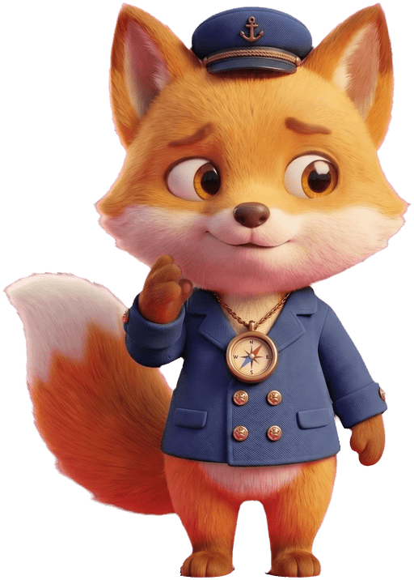
Frag deine Eltern: Was arbeitest du, und wofür bekommst du Geld?
Station 7 und Auftrag
Wie viel ist viel?
1
Auftrag: Preis-Detektiv
Suche beim nächsten Einkauf drei Dinge. Schätze zuerst den Preis, dann schau auf das Preisschild.
| Was? | Mein Tipp | Echter Preis | Daneben um |
|---|
| | | |
| | | |
| | | |
Überlegt zusammen: Wer verdient an einem dieser Dinge alles mit?
2
Billig, mittel oder teuer?
Schreib B (billig), M (mittel) oder T (teuer) in die Kreise.
ein Kaugummi
ein Fahrrad
eine Kinokarte
ein Auto
ein Fußball
ein Brötchen
3
Mein Wunsch
Male etwas, das du dir wünschst. Was glaubst du, was es kostet? €
Tipp: In der App kannst du daraus einen Wunschschatz machen und Geld dafür zurücklegen.
Rätsel
Hafen-Rätsel
1
Preise lesen
Verbinde jeden Preis mit den passenden Worten. Zieh einen Strich von Punkt zu Punkt.
2,05 €
fünfzig Cent
0,50 €
zwölf Euro und neunzig Cent
12,90 €
zwei Euro und fünf Cent
1,99 €
ein Euro und neunundneunzig Cent
2
Geld-Wörter-Suche
Finde 6 Wörter rund ums Geld. Sie stehen alle waagerecht: MUENZE (so schreibt man Münze ohne Pünktchen), SCHEIN, PREIS, CENT, EURO, TAUSCH.
| M | U | E | N | Z | E | A | N | K | P |
| M | T | B | D | R | I | G | E | S | U |
| A | O | L | S | C | H | E | I | N | E |
| A | N | K | P | M | T | B | D | R | I |
| P | R | E | I | S | G | E | S | U | A |
| O | L | E | A | N | K | P | M | T | B |
| D | R | C | E | N | T | I | G | E | S |
| U | A | O | L | E | A | N | K | P | M |
| T | B | D | R | I | E | U | R | O | G |
| T | A | U | S | C | H | E | S | U | A |
Ausmalen
Bewohner der Insel Hafen von Taleria
Mal die beiden aus. Wer sind sie, und was haben sie dir beigebracht?
Gemeinsam
Mit deinen Eltern
Erklär's deinen Eltern
Du kennst dich jetzt auf der Insel Hafen von Taleria aus. Erklär deinen Eltern diese 3 Dinge. Schreib dir vorher ein Stichwort dazu auf, wenn du magst.
Warum es Geld gibt: Tauschen ist oft schwierig, mit Geld geht es leicht. Wie man einen Preis mit Komma liest, zum Beispiel 2,05 €. Woher das Geld kommt: Erwachsene verdienen es mit ihrer Arbeit. Deine Eltern fragen vielleicht: „Was würde passieren, wenn es morgen kein Geld mehr gäbe?“
Crew-Abenteuer: Preis-Detektiv
Suche beim nächsten Einkauf drei Produkte, schätze vorher ihren Preis und vergleiche dann mit dem echten Preis. Überlege mit deinen Eltern, wer an einem davon alles mitverdient.
So bekommst du deine Crew-Sterne
- Deine Eltern öffnen in der App den Leuchtturm und dort „Gemeinsam“.
- Sie tippen auf „Code anzeigen“ und sagen dir den Code.
- Du tippst auf deiner Startseite auf „Crew-Abenteuer“ und gibst den Code ein.
Erklärt Abenteuer geschafft
Urkunde
Erster Landgang

Hiermit bestätigen Kapitän Talo und Zahlmeisterin Tala:
hat den Hafen von Taleria geschafft und weiß jetzt, was Geld ist, woher es kommt und wie man Preise liest.

Dein Schatzcode
ANKER7
Öffne in der App die Werft und tippe auf „Schatzcode eingeben“. Dafür bekommst du die Anker-Flagge für dein Schiff!
Das lernst du hier
- Wie Tauschen ohne Geld klappt und wann nicht
- Warum etwas für jeden anders viel wert ist
- Warum billig nicht immer günstig ist
So machst du dieses Kapitel
- Spiel in der App die Stationen auf der Insel Tauschinsel.
- Mach danach die passende Seite hier im Buch. Oben steht, zu welcher Station sie gehört.
- Mal auf der Seekarte vorn jede geschaffte Station aus.
- Am Ende: Erklär deinen Eltern, was du gelernt hast, und hol dir deine Urkunde mit Schatzcode.
Station 1 und 2
Tauschen ohne Geld
1
Wer hat was?
Auf der Tauschinsel gibt es kein Geld. Hier siehst du, wer was hat und was er dafür haben will.
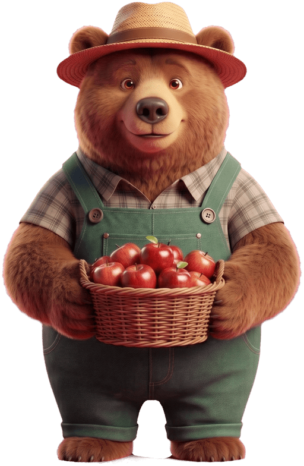
Bruno, der Bärhat: Äpfelwill: Fisch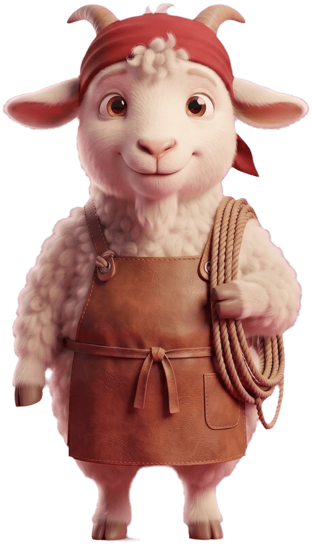
Greta, die Ziegehat: Seilwill: Äpfel Otti, der Otterhat: Fischwill: Eimer
Otti, der Otterhat: Fischwill: Eimer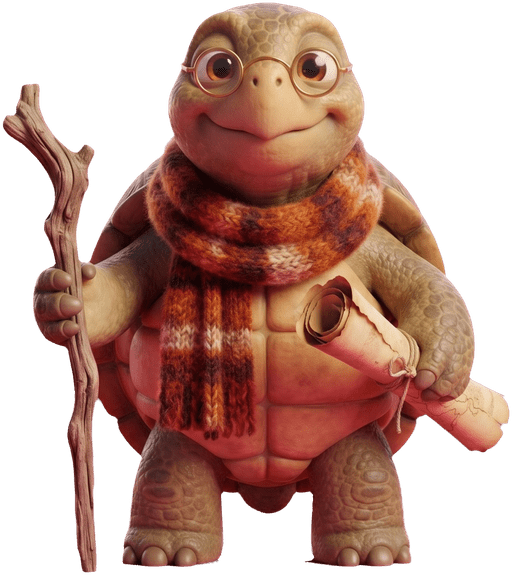
Olga, die Schildkrötehat: Muschelwill: Eimer
Tala hat einen Eimer und braucht ein Seil. Schreib auf, mit wem sie nacheinander tauscht.
Eimer→→→Seil
Warum hilft ihr der Tausch mit Olga nicht weiter?
2
Vor jedem Tausch überlegen
Kreuze an, was du dich vor einem Tausch fragen solltest.
Was brauche ich wirklich?
Was gebe ich dafür her?
Wer ruft am lautesten?
Darf man zurücktauschen?
Frag deine Eltern: Was hast du als Kind getauscht, und war es ein guter Tausch?
Station 3 und 4
Was ist es wert?
1
Wert ist nicht für jeden gleich
Wann ist das Ding mehr wert? Kreise die Situation ein.
| Ding | Situation A | Situation B |
|---|
| ein Regenschirm | bei Regen | bei Sonnenschein |
| eine Flasche Wasser | am Strand in der Hitze | zu Hause am Wasserhahn |
| eine warme Mütze | im Sommer | im Winter |
2
Wenn alle Eis wollen
Am Eisstand gibt es nur 20 Kugeln. Wird der Preis eher höher oder niedriger? Schreib H oder N in den Kreis.
Es ist heiß, und 30 Kinder wollen Eis.
Es regnet, und kaum jemand will Eis.
Ein zweiter Eisstand macht daneben auf.
Morgen ist ein Fest, alle kommen zum Strand.
3
Was ist dir viel wert?
Male etwas, das dir viel wert ist, für andere aber kaum etwas.
Station 5 und 6
Billig oder günstig?
1
Ottis Netze
Ein billiges Netz kostet 5 Taler und hält einen Monat. Ein gutes Netz kostet 20 Taler und hält ein ganzes Jahr.
Wie viel kosten billige Netze für ein ganzes Jahr (12 Monate)?
Welches ist auf das Jahr gesehen günstiger?
Platz zum Rechnen:
2
Preis pro Stück
Bei Händler A gibt es 4 Fische für 10 Taler. Bei Händler B gibt es 3 Fische für 9 Taler.
| So viel kostet 1 Fisch |
|---|
| Händler A | |
| Händler B | |
Wo ist ein Fisch günstiger?
3
Jede Wahl hat einen Preis
Du hast 10 Taler. Ein Kinobesuch kostet 8 Taler, ein Buch 7 Taler und ein Eis 3 Taler. Wofür entscheidest du dich, und worauf verzichtest du dafür?
Station 7 und Auftrag
Fair tauschen
1
Was gehört zu einem fairen Tausch?
Kreuze an.
Beide wissen genau, was sie bekommen.
Beide sind einverstanden.
Einer überredet den anderen schnell.
Man klärt vorher, ob man zurücktauschen darf.
Man verschweigt, dass etwas kaputt ist.
Keiner fühlt sich gedrängt.
2
Auftrag: Fairer Tausch
Tausche mit jemandem aus deiner Familie etwas, zum Beispiel ein Buch, ein Spielzeug oder eine Sammelkarte.
| Ich | Mein Tauschpartner |
|---|
| Das gebe ich her | | |
| Darum ist es mir etwas wert | | |
| Dürfen wir zurücktauschen? | | |
Frag deine Eltern: Wann musstest du zuletzt auf etwas verzichten, um dir etwas anderes leisten zu können?
Rätsel und Basteln
Tausch-Werkstatt
1
Tausch-Rechnen
Bei Otti bekommst du 1 Fisch für 2 Äpfel. Bei Greta bekommst du 1 Seil für 3 Fische.
Wie viele Äpfel brauchst du für 1 Seil?
Wie viele Äpfel für 2 Seile?
2
Basteln: Tauschkarten
Schneide 6 Kärtchen aus Papier. Mal auf jedes etwas, das du hast (ein Buch, ein Spielzeug, eine Murmel). Spielt dann in der Familie Tauschmarkt: Jeder darf nur tauschen, wenn beide zufrieden sind.
Ausmalen
Bewohner der Insel Tauschinsel
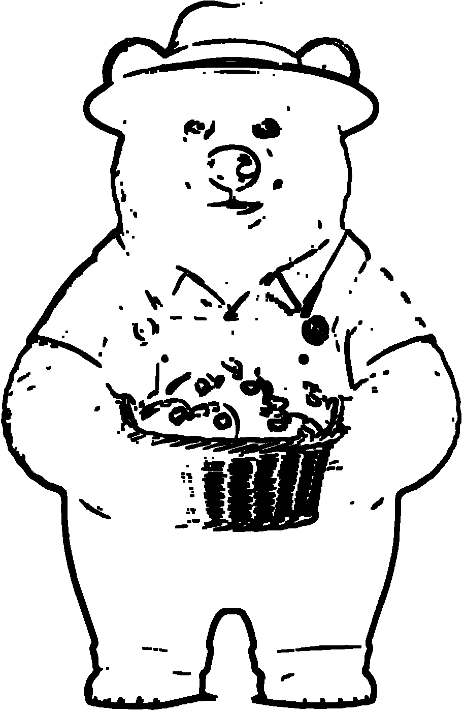
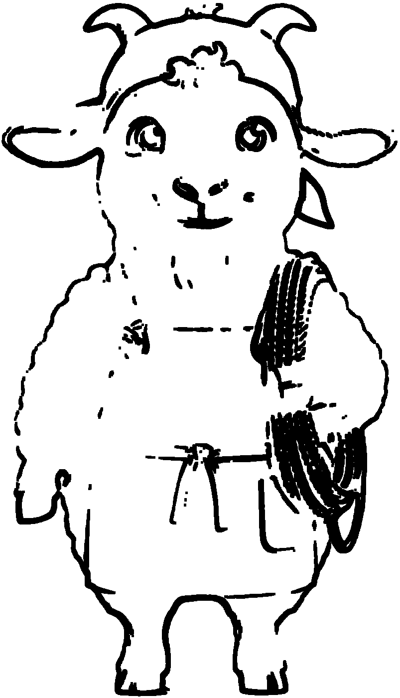
Mal die beiden aus. Wer sind sie, und was haben sie dir beigebracht?
Gemeinsam
Mit deinen Eltern
Erklär's deinen Eltern
Du kennst dich jetzt auf der Insel Tauschinsel aus. Erklär deinen Eltern diese 3 Dinge. Schreib dir vorher ein Stichwort dazu auf, wenn du magst.
Ein Tausch ist fair, wenn beide am Ende zufrieden sind. Etwas ist so viel wert, wie andere dafür geben würden. Wenn viele etwas wollen und es wenig davon gibt, wird es teurer. Deine Eltern fragen vielleicht: „Was würdest du nie eintauschen, und warum?“
Crew-Abenteuer: Fairer Tausch
Tausche mit jemandem aus der Familie etwas (Buch, Spielzeug, Sammelkarte). Erzählt euch vorher gegenseitig, warum euch die Sachen etwas wert sind, und klärt, ob man zurücktauschen darf.
So bekommst du deine Crew-Sterne
- Deine Eltern öffnen in der App den Leuchtturm und dort „Gemeinsam“.
- Sie tippen auf „Code anzeigen“ und sagen dir den Code.
- Du tippst auf deiner Startseite auf „Crew-Abenteuer“ und gibst den Code ein.
Erklärt Abenteuer geschafft
Urkunde
Meistertauscher

Hiermit bestätigen Kapitän Talo und Zahlmeisterin Tala:
hat die Tauschinsel geschafft und weiß jetzt, wie Tauschen klappt, warum Dinge für jeden anders viel wert sind und warum billig nicht immer günstig ist.
Dein Schatzcode
MUSCHEL3
Öffne in der App die Werft und tippe auf „Schatzcode eingeben“. Dafür bekommst du die Muschel-Flagge für dein Schiff!
Kapitel 3
Wunschinsel
Das lernst du hier
- Was du wirklich brauchst und was du dir nur wünschst
- Wie die Warte-Regel bei Wünschen hilft
- Wie du Nein sagst, wenn andere drängeln
So machst du dieses Kapitel
- Spiel in der App die Stationen auf der Insel Wunschinsel.
- Mach danach die passende Seite hier im Buch. Oben steht, zu welcher Station sie gehört.
- Mal auf der Seekarte vorn jede geschaffte Station aus.
- Am Ende: Erklär deinen Eltern, was du gelernt hast, und hol dir deine Urkunde mit Schatzcode.
Station 1 und 2
Brauchen oder wollen?
1
Bedürfnis oder Wunsch?
Schreib B (das brauche ich) oder W (das wünsche ich mir) in den Kreis.
Trinkwasser
ein Videospiel
eine Winterjacke
Sammelsticker
eine Zahnbürste
eine Kinokarte
Brot
Glitzer-Turnschuhe
ein Bett
2
Was zuerst?
Du hast 15 €. Nummeriere von 1 (am wichtigsten) bis 4. Dann kreise ein, was du dir von 15 € kaufst.
| Was? | Preis | Wie wichtig? |
|---|
| ein Heft für die Schule | 2 € | |
| Geschenk für Omas Geburtstag | 8 € | |
| ein Comic | 6 € | |
| ein Eis | 2 € | |
So viel bleibt übrig:
Frag deine Eltern: Was hast du dir mal sehr gewünscht und dann kaum benutzt?
Station 3 und 4
Warten und Nein sagen
1
Meine Wunschflasche
Schreib einen Wunsch auf. Nach einer Woche schaust du nach: Willst du ihn noch?
Mein Wunsch:
Heute ist der:
Nach einer Woche: Ich will ihn noch. Ich brauche ihn nicht mehr.
2
„Alle haben das!“
Deine Freunde sagen: „Alle haben die neuen Schuhe, du musst sie auch kaufen!“ Was kannst du sagen? Kreuze an, was dir hilft.
„Ich überlege es mir erst in Ruhe.“
„Okay, ich kaufe sie sofort.“
„Ich brauche sie gerade nicht.“
„Ich spare gerade für etwas anderes.“
„Ihr seid doof.“
„Mir gefallen meine Schuhe.“
Station 5 und 6
Was macht glücklich?
1
Glück ohne Geld
Male drei Dinge, die dich glücklich machen und kein Geld kosten.
2
Erlebnis oder Ding?
Schreib E (Erlebnis) oder D (Ding) in den Kreis.
ein Ausflug an den See
ein neues Spielzeugauto
ein Picknick mit Freunden
ein T-Shirt
eine Nacht im Zelt
ein Kuscheltier
Frag deine Eltern: Was war dein schönstes Erlebnis, das fast kein Geld gekostet hat?
Station 7 und Auftrag
Meine Wunschliste
1
Meine Wunschliste
Schreib deine Wünsche auf. Brauchst du sie (B) oder wünschst du sie dir (W)? Wie wichtig sind sie (1 = sehr, 3 = nicht so)?
| Wunsch | Ungefährer Preis | B oder W | Wie wichtig? |
|---|
| | | |
| | | |
| | | |
| | | |
2
Auftrag: Wunschflasche
Steck einen Wunsch in der App in die Wunschflasche. Schau nach einer Woche mit deinen Eltern nach, ob du ihn noch willst.
Das habe ich nach einer Woche entschieden:
Rätsel und Basteln
Wunsch-Werkstatt
1
Werbe-Detektiv
Welche Sätze sind Werbe-Tricks? Kreuz sie an.
„Nur heute!“
„Alle haben es!“
„Gratis dazu!“
„Hält ein ganzes Jahr.“
„Kostet 3 Euro.“
„Nur noch 2 Stück!“
2
Basteln: Meine Wunschflasche
Mal eine Flasche auf ein Blatt und schneide sie aus. Schreib einen Wunsch und das Datum darauf und kleb sie an den Kühlschrank. Willst du ihn nach einer Woche noch?
| Mein Wunsch | Datum | Nach 1 Woche: noch wichtig? |
|---|
| | |
| | |
Ausmalen
Bewohner der Insel Wunschinsel
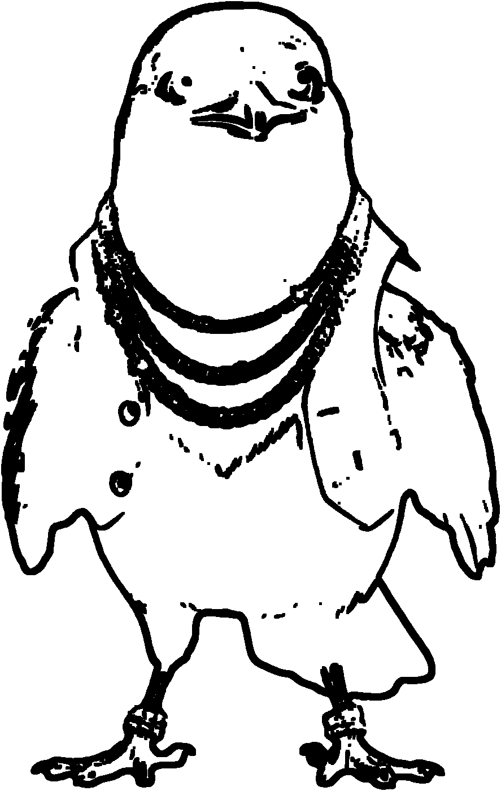
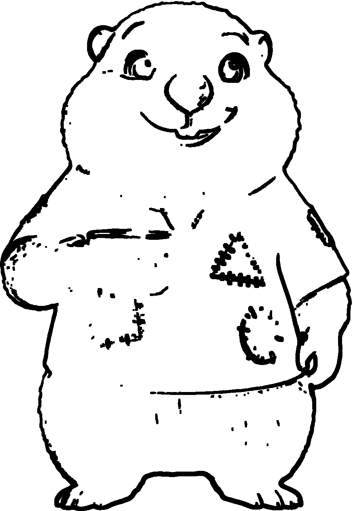
Mal die beiden aus. Wer sind sie, und was haben sie dir beigebracht?
Gemeinsam
Mit deinen Eltern
Erklär's deinen Eltern
Du kennst dich jetzt auf der Insel Wunschinsel aus. Erklär deinen Eltern diese 3 Dinge. Schreib dir vorher ein Stichwort dazu auf, wenn du magst.
Den Unterschied zwischen Brauchen und Wollen. Die Wunschflasche: Ein neuer Wunsch darf erst mal warten. Wie man Nein sagt, wenn andere drängeln oder Werbung lockt. Deine Eltern fragen vielleicht: „Was hast du dir mal gewünscht und später gar nicht mehr gewollt?“
Crew-Abenteuer: Wunschflasche
Steck einen Wunsch in die Wunschflasche und schau nach einer Woche mit deinen Eltern nach, ob du ihn noch willst.
So bekommst du deine Crew-Sterne
- Deine Eltern öffnen in der App den Leuchtturm und dort „Gemeinsam“.
- Sie tippen auf „Code anzeigen“ und sagen dir den Code.
- Du tippst auf deiner Startseite auf „Crew-Abenteuer“ und gibst den Code ein.
Erklärt Abenteuer geschafft
Urkunde
Klarer Kompass

Hiermit bestätigen Kapitän Talo und Zahlmeisterin Tala:
hat die Wunschinsel geschafft und weiß jetzt, was man wirklich braucht, wie die Warte-Regel hilft und wie man Nein sagt.
Dein Schatzcode
FLASCHE5
Öffne in der App die Werft und tippe auf „Schatzcode eingeben“. Dafür bekommst du die Flaschenpost-Flagge für dein Schiff!
Kapitel 4
Spar-Insel
Das lernst du hier
- Warum Sparen hilft, auch für Notfälle
- Wie kleine Beträge mit der Zeit groß werden
- Wie du mit einem Sparplan dein Ziel erreichst
So machst du dieses Kapitel
- Spiel in der App die Stationen auf der Insel Spar-Insel.
- Mach danach die passende Seite hier im Buch. Oben steht, zu welcher Station sie gehört.
- Mal auf der Seekarte vorn jede geschaffte Station aus.
- Am Ende: Erklär deinen Eltern, was du gelernt hast, und hol dir deine Urkunde mit Schatzcode.
Station 1 und 2
Warum sparen?
1
Wofür ist Sparen gut?
Kreuze alles an, was stimmt.
Ich kann mir später etwas Größeres leisten.
Ich habe Geld, wenn etwas kaputtgeht.
Gespartes Geld wird von allein doppelt so viel.
Ich muss mir nicht sofort alles kaufen.
Sparen heißt, nie wieder etwas auszugeben.
Ich kann ein Ziel planen.
2
Mein Wunschschatz
Ein gutes Sparziel ist genau: Was, wie viel, bis wann?
Was wünsche ich mir?
Was kostet es?
Bis wann will ich es haben?
Frag deine Eltern: Wofür hast du als Kind gespart?
Station 3 und 4
Kleine Beträge werden groß
1
50 Cent am Tag
Tala legt jeden Tag 50 Cent zurück. Wie viel hat sie nach …
| Zeit | Rechnung | Gespart |
|---|
| 1 Woche (7 Tage) | 7 × 50 ct | |
| 4 Wochen | 4 × ... | |
| 1 Jahr (52 Wochen) | 52 × ... | |
2
Geduld lohnt sich
Gustav, die Grille, darf sofort ein Eis essen. Emma, das Eichhörnchen, wartet eine Woche und bekommt dafür zwei Eis. Was würdest du machen, und warum?
3
Wie viel Geduld brauchst du?
Wie lange musst du sparen? Tala legt jede Woche 3 Taler zurück.
| Ziel | So viele Wochen |
|---|
| ein Ball für 12 Taler | |
| ein Buch für 9 Taler | |
| ein Rucksack für 30 Taler | |
Station 5 und 6
Mein Sparplan
1
Emmas Sparplan
Emma möchte 30 Taler sparen und legt jede Woche 5 Taler zurück. Male für jede Woche ein Kästchen aus, bis sie 30 Taler hat.
Nach wie vielen Wochen hat sie ihr Ziel erreicht?
2
Wo spare ich?
Verbinde jeden Sparort mit dem, was zu ihm passt.
Sparschwein
Spardose mit Schloss
Konto bei der Bank
Man sieht und hört, wie es mehr wird.
Das Geld ist sicher, und Erwachsene helfen beim Einrichten.
Man kommt nicht so leicht schnell ans Geld.
Station 7 und Auftrag
Schatztruhen-Challenge
1
Vier Wochen sparen
Leg vier Wochen lang jede Woche etwas für deinen Wunschschatz zurück, egal wie wenig. Trag es hier ein.
| Woche | Diese Woche zurückgelegt | Zusammen |
|---|
| 1 | | |
| 2 | | |
| 3 | | |
| 4 | | |
2
Auftrag: Erster Wunschschatz
Legt in der App zusammen einen Wunschschatz an und besprecht, wie viel jede Woche dafür zurückgelegt wird.
Unser Plan: jede Woche
Frag deine Eltern: Wofür sparen wir als Familie gerade?
Rätsel und Basteln
Spar-Werkstatt
1
Spar-Thermometer
Ein Fahrrad-Helm kostet 60 €. Du legst jede Woche 5 € zurück. Mal für jede Woche ein Kästchen aus.
Nach wie vielen Wochen hast du genug?
2
Basteln: Drei Spargläser
Nimm drei leere Gläser oder Dosen und kleb Etiketten darauf: Wunsch, Notfall und Geplantes. Wofür sparst du in welchem Glas?
| Glas | Wofür? |
|---|
| Wunsch | |
| Notfall | |
| Geplantes | |
Ausmalen
Bewohner der Insel Spar-Insel
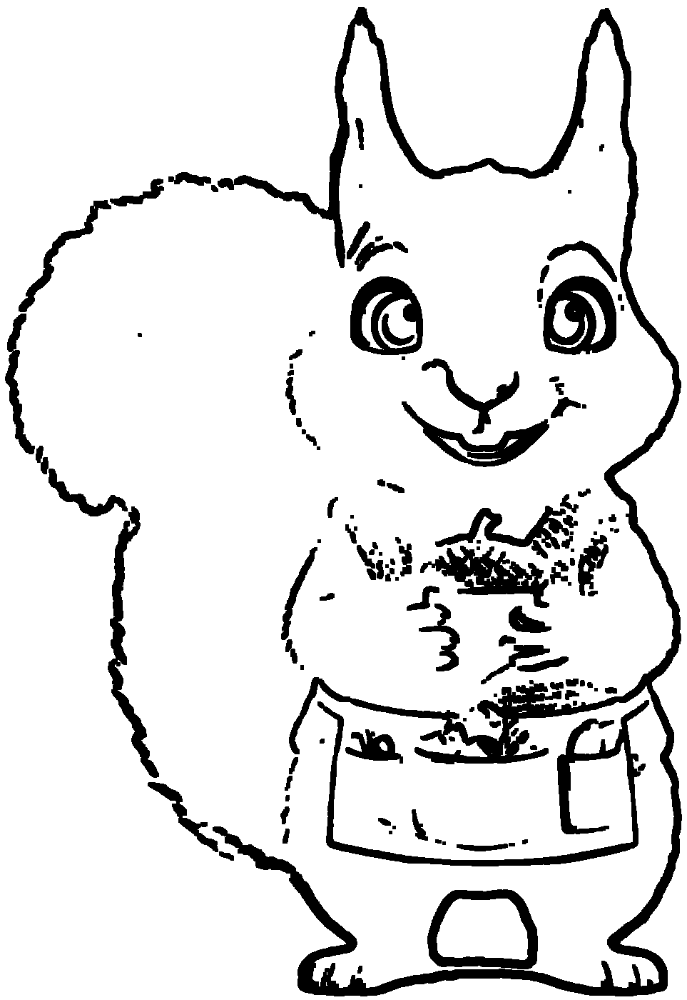
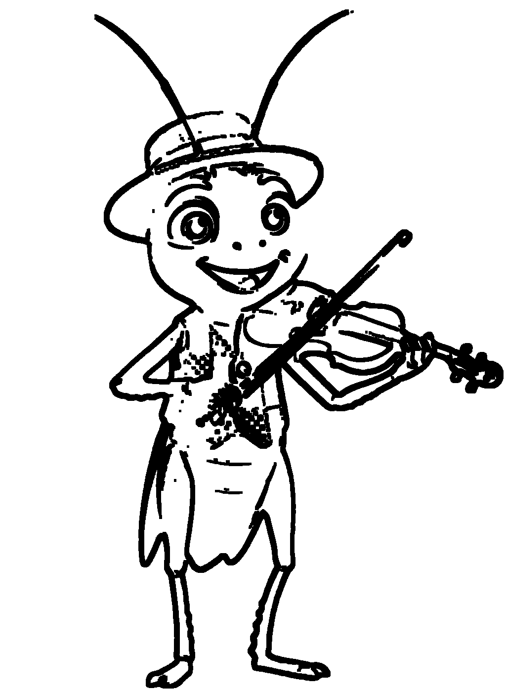
Mal die beiden aus. Wer sind sie, und was haben sie dir beigebracht?
Gemeinsam
Mit deinen Eltern
Erklär's deinen Eltern
Du kennst dich jetzt auf der Insel Spar-Insel aus. Erklär deinen Eltern diese 3 Dinge. Schreib dir vorher ein Stichwort dazu auf, wenn du magst.
Sparen heißt: heute etwas zurücklegen, damit man später etwas hat. Wofür man spart: für einen Wunsch, einen Notfall oder etwas Geplantes. Wie man mit einem Sparplan ausrechnet, wann das Geld reicht. Deine Eltern fragen vielleicht: „Wie lange müsstest du für deinen größten Wunsch sparen?“
Crew-Abenteuer: Erster Wunschschatz
Legt gemeinsam einen echten Wunschschatz mit Sparplan an und besprecht, wie viel jede Woche in die Schatztruhe kommt.
So bekommst du deine Crew-Sterne
- Deine Eltern öffnen in der App den Leuchtturm und dort „Gemeinsam“.
- Sie tippen auf „Code anzeigen“ und sagen dir den Code.
- Du tippst auf deiner Startseite auf „Crew-Abenteuer“ und gibst den Code ein.
Erklärt Abenteuer geschafft
Urkunde
Vorratsmeister
Hiermit bestätigen Kapitän Talo und Zahlmeisterin Tala:
hat die Spar-Insel geschafft und weiß jetzt, warum Sparen hilft, wie kleine Beträge groß werden und wie ein Sparplan funktioniert.
Dein Schatzcode
TALER9
Öffne in der App die Werft und tippe auf „Schatzcode eingeben“. Dafür bekommst du die Taler-Flagge für dein Schiff!
Kapitel 5
Taschengeld-Bucht
Das lernst du hier
- Wie du dein Taschengeld gut einteilst
- Wie ein Logbuch zeigt, wohin dein Geld geht
- Wie du eine Woche planst und fair verhandelst
So machst du dieses Kapitel
- Spiel in der App die Stationen auf der Insel Taschengeld-Bucht.
- Mach danach die passende Seite hier im Buch. Oben steht, zu welcher Station sie gehört.
- Mal auf der Seekarte vorn jede geschaffte Station aus.
- Am Ende: Erklär deinen Eltern, was du gelernt hast, und hol dir deine Urkunde mit Schatzcode.
Station 1
Wie viel Taschengeld ist üblich?
1
Was stimmt beim Taschengeld?
Kreuze alles an, was stimmt.
Jede Familie entscheidet selbst, wie viel es gibt.
Wer mehr bekommt, muss oft auch mehr selbst bezahlen.
Alle Kinder bekommen gleich viel.
Vergleichen macht oft unzufrieden.
Mit einer festen Summe kann man gut üben.
Taschengeld muss man sofort ausgeben.
2
Wer bezahlt was?
Frag deine Eltern und kreuze an, wer was bei euch bezahlt.
| Ich | Meine Eltern |
|---|
| Süßigkeiten | | |
| Hefte und Stifte | | |
| Kino mit Freunden | | |
| Busfahrten | | |
| Geschenke für Freunde | | |
3
Wöchentlich oder monatlich?
Bekommst du dein Taschengeld jede Woche oder einmal im Monat? Was ist daran gut, was ist schwer?
Frag deine Eltern: Wie viel Taschengeld hattest du als Kind?
Station 2
Geld bekommt eine Aufgabe
1
Talas 10 Taler
Tala legt 3 Taler für ihren Wunschschatz zurück. Wie viel ist frei zum Ausgeben?
Frei zum Ausgeben:
2
Frei oder zurücklegen?
Schreib ein F (frei zum Ausgeben) oder ein W (für einen Wunschschatz zurücklegen) in den Kreis.
Ein Eis heute
Rollschuhe für 40 Taler
Sticker fürs Album
Ein Zelt für die Ferien
Saft für den Ausflug morgen
Ein großes Lego-Schiff
3
Meine Aufteilung
So teile ich mein eigenes Taschengeld auf:
| Betrag |
|---|
| Mein Taschengeld | |
| Für meinen Wunschschatz | |
| Frei zum Ausgeben | |
Mein Wunschschatz ist:
Station 3
Einnahmen und Ausgaben
1
Einnahme oder Ausgabe?
Schreib ein E für Einnahme oder ein A für Ausgabe in den Kreis.
Taschengeld von Mama
Ein Eis am Kiosk
Geld von Oma zum Geburtstag
Eine Busfahrkarte
Ein Heft für die Schule
Geld fürs Rasenmähen
2
Kurts Logbuch rechnen
Kurt beginnt mit 5 Talern. Rechne den Stand nach jedem Zettel aus.
| Zettel | + / − | Stand |
|---|
| Am Anfang | | 5 |
| Taschengeld | + 8 | |
| Bonbons | − 2 | |
| Comic | − 4 | |
| Geld von Oma | + 5 | |
| Eis | − 3 | |
3
Wofür geht mein Geld?
Male für jede Sache so viele Kästchen aus, wie du in einer Woche ausgibst.
| 1 | 2 | 3 | 4 | 5 | 6 |
|---|
| Süßes | | | | | | |
| Spielzeug | | | | | | |
| Schule | | | | | | |
| Anderes | | | | | | |
Station 4
Mein Wochenplan
1
Mit 8 Talern durch die Woche
Die Busfahrt (2 Taler) muss sein. Was passt noch in 8 Taler? Kreuze an und rechne.
Kinokarte: 6 Taler
Sticker: 2 Taler
Snack: 3 Taler
Glitzerstift: 1 Taler
Das kostet zusammen:
2
Mein eigener Wochenplan
Plane deine nächste Woche. Was muss sein, was wünschst du dir?
| Tag | Was? | Muss sein? | Taler |
|---|
| Montag | | | |
| Dienstag | | | |
| Mittwoch | | | |
| Donnerstag | | | |
| Freitag | | | |
| Wochenende | | | |
Mein Taschengeld:
Alles zusammen kostet:
Passt es?
Station 5
Wenn das Geld alle ist
1
Der Beutel ist leer
Es ist Mittwoch, und Talas Taschengeld ist schon weg. Was ist klug? Kreuze an.
Bis zum nächsten Taschengeld warten
Sofort Geld leihen und doppelt zurückgeben
Etwas machen, das nichts kostet
Nächste Woche gleich am Montag planen
2
Leihen kostet mehr
Mia leiht Tala 5 Taler. Nächste Woche will sie 10 Taler zurück.
So viel muss Tala mehr zurückgeben:
3
Spaß ohne Geld
Schreib fünf Dinge auf, die Spaß machen und nichts kosten.
Station 6
Geld geschenkt bekommen
1
Omas Geschenk
Oma schenkt dir 20 Taler. Wie teilst du sie auf?
| Wofür? | Taler |
|---|
| Jetzt ausgeben | |
| Für meinen Wunschschatz | |
| Zusammen | 20 |
2
Rechnen wie Tala
Tala hatte 18 Taler zurückgelegt und legt 12 dazu. Die Rollschuhe kosten 40 Taler.
Jetzt hat sie:
Es fehlen noch:
3
Meine Danke-Karte
Male eine Danke-Karte für jemanden, der dir etwas geschenkt hat.
Station 7
Taschengeld verhandeln
1
Gut verhandeln
Was hilft, wenn du um mehr Taschengeld bittest? Kreuze an.
In einem ruhigen Moment fragen
Mein Logbuch zeigen
Quengeln, bis alle Ja sagen
Anbieten, mehr selbst zu bezahlen
Sagen, dass alle anderen mehr bekommen
Freundlich bleiben, wenn die Antwort Nein ist
2
Meine guten Gründe
Warum könntest du mehr Taschengeld brauchen? Und was würdest du dafür selbst bezahlen?
Mein Grund:
Das bezahle ich dann selbst:
3
Übt das Gespräch
Spielt es zu Hause einmal durch. Diese Satzanfänge helfen:
„Ich habe aufgeschrieben, dass …“
„Ich würde gern selbst … bezahlen.“
„Können wir nächste Woche noch einmal darüber reden?“
Frag deine Eltern: Was könnte ich ab jetzt selbst bezahlen?
Rätsel
Kurts Rätselseite
1
Wörtersuche
Finde die 6 Wörter: TALER, BUDGET, KIOSK, SPAREN, LOGBUCH, PLAN.
| T | A | L | E | R | A | O | S | L |
| I | B | P | E | R | T | K | E | O |
| A | B | U | D | G | E | T | M | G |
| N | L | U | G | A | O | S | I | B |
| K | I | O | S | K | B | P | E | U |
| R | T | K | E | A | M | N | L | C |
| U | G | S | P | A | R | E | N | H |
| A | O | S | I | B | P | E | R | T |
| K | E | A | P | L | A | N | M | N |
2
Kurts Kopfrechnen
Rechne im Kopf.
| Aufgabe | Ergebnis |
|---|
| 10 Taler − 3 − 4 | |
| 5 Wochen × 3 Taler | |
| Spiel für 15 Taler, 5 Taler pro Woche: wie viele Wochen? | |
Auftrag
Logbuch-Woche
1
Auftrag: Logbuch-Woche
Schreib eine Woche lang alles auf, was du bekommst und ausgibst. Schau es danach mit deinen Eltern an.
| Tag | Bekommen | Ausgegeben | Wofür? |
|---|
| Montag | | | |
| Dienstag | | | |
| Mittwoch | | | |
| Donnerstag | | | |
| Freitag | | | |
| Samstag | | | |
| Sonntag | | | |
Am meisten habe ich ausgegeben für:
Rätsel
Bucht-Rätsel
1
Taschengeld-Wörter
Finde 6 Wörter. Sie stehen alle waagerecht: PLAN, SPAREN, AUSGABE, LOGBUCH, BUDGET, EINNAHME.
| P | L | A | N | A | N | K | P | M | T |
| B | D | R | I | G | E | S | U | A | O |
| L | E | A | S | P | A | R | E | N | N |
| K | P | M | T | B | D | R | I | G | E |
| S | U | A | U | S | G | A | B | E | A |
| O | L | E | A | N | K | P | M | T | B |
| D | L | O | G | B | U | C | H | R | I |
| G | E | S | U | A | O | L | E | A | N |
| K | P | B | U | D | G | E | T | M | T |
| E | I | N | N | A | H | M | E | B | D |
2
Wochen-Rätsel
Mia hat 10 Taler. Sie kauft ein Heft für 3 Taler und ein Eis für 2 Taler. Die Hälfte vom Rest legt sie zurück.
Wie viele Taler legt Mia zurück?
Wie viele kann sie noch ausgeben?
Ausmalen
Bewohner der Insel Taschengeld-Bucht
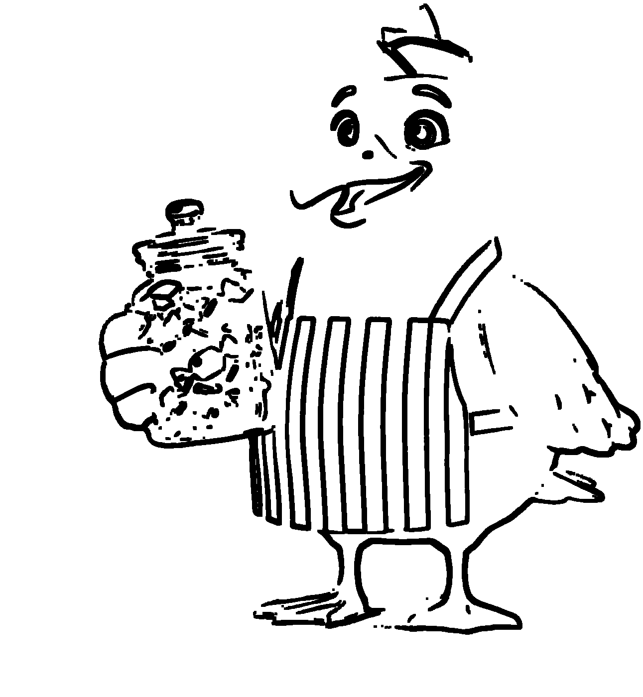
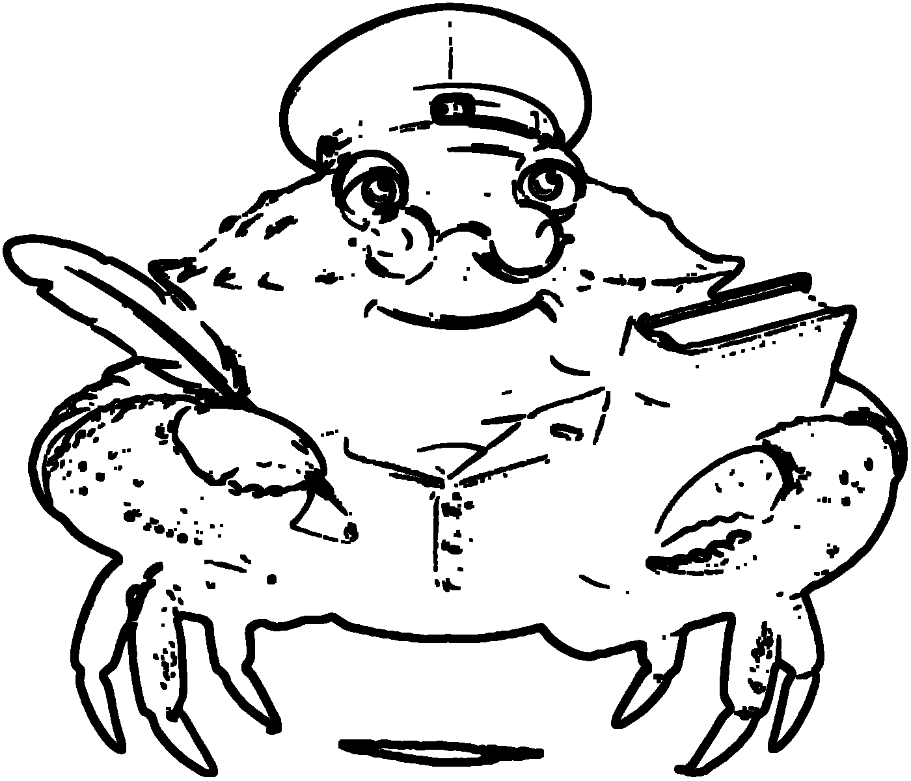
Mal die beiden aus. Wer sind sie, und was haben sie dir beigebracht?
Gemeinsam
Mit deinen Eltern
Erklär's deinen Eltern
Du kennst dich jetzt auf der Insel Taschengeld-Bucht aus. Erklär deinen Eltern diese 3 Dinge. Schreib dir vorher ein Stichwort dazu auf, wenn du magst.
Wie man Taschengeld einteilt: etwas zum Ausgeben, etwas zum Sparen. Warum ein Logbuch zeigt, wohin das Geld wirklich geht. Wie man fair um mehr Taschengeld verhandelt. Deine Eltern fragen vielleicht: „Wofür gibst du dein Taschengeld am liebsten aus?“
Crew-Abenteuer: Logbuch-Woche
Schreib eine Woche lang alle Einnahmen und Ausgaben in ein Heft und schau es danach mit deinen Eltern an.
So bekommst du deine Crew-Sterne
- Deine Eltern öffnen in der App den Leuchtturm und dort „Gemeinsam“.
- Sie tippen auf „Code anzeigen“ und sagen dir den Code.
- Du tippst auf deiner Startseite auf „Crew-Abenteuer“ und gibst den Code ein.
Erklärt Abenteuer geschafft
Urkunde
Kassenwart der Bucht

Hiermit bestätigen Kapitän Talo und Zahlmeisterin Tala:
hat die Taschengeld-Bucht geschafft und weiß jetzt, wie man Taschengeld einteilt, aufschreibt und eine Woche plant.
Dein Schatzcode
KURT5
Öffne in der App die Werft und tippe auf „Schatzcode eingeben“. Dafür bekommst du die Logbuch-Flagge für dein Schiff!
Für Eltern
Lösungen und Tipps
Hafen von Taleria
Seite 6
- Tauschkette: Eimer → Fisch → Äpfel → Seil, also 3-mal tauschen.
- Richtig: 1., 3. und 4. Aussage. Geld kann sehr wohl weniger wert werden (Inflation, kommt später auf der Zins-Insel).
- Reihenfolge: Muscheln (1), Münzen (2), Scheine (3), Karte oder Handy (4).
Seite 7
- 2,70 € · 6,05 € · 12,20 €
- Wechselgeld: 2,50 € · 0,20 € · 0,70 € · 3,60 €
- 3,80 € = 2 € + 1 € + 50 ct + 20 ct + 10 ct, also 5 Münzen.
Seite 8
- Bootsbauer: baut und repariert Boote. Verkäuferin: verkauft Fischbrötchen. Händler: verkauft Waren von anderen Inseln.
- Im Preis: Fisch und Brötchen, Miete, Lohn, Gewinn. Nicht: Sonnenschein, das Meer.
Seite 9
- Billig: Kaugummi, Brötchen. Mittel: Kinokarte, Fußball. Teuer: Fahrrad, Auto. Andere Einteilungen sind in Ordnung, wenn Ihr Kind sie begründen kann.
- Preis-Detektiv: Es geht ums Schätzen, nicht ums Treffen.
Hafen-Rätsel
- 2,05 € = zwei Euro und fünf Cent; 0,50 € = fünfzig Cent; 12,90 € = zwölf Euro und neunzig Cent; 1,99 € = ein Euro und neunundneunzig Cent.
- Wörtersuche: MÜNZE steht als MUENZE im Gitter.
Für Eltern
Lösungen und Tipps
Tauschinsel
Seite 15
- Tauschkette: Eimer an Otti (gibt Fisch), Fisch an Bruno (gibt Äpfel), Äpfel an Greta (gibt Seil).
- Olga gibt eine Muschel, die aber niemand haben will: eine Sackgasse.
- Richtig: brauchen, hergeben, zurücktauschen. Nicht: wer am lautesten ruft.
Seite 16
- Mehr wert: Schirm bei Regen, Wasser in der Hitze, Mütze im Winter.
- Preis eher höher: heiß und viele Kinder, Fest am Strand. Eher niedriger: Regen, zweiter Eisstand.
Seite 17
- 12 × 5 Taler = 60 Taler. Das gute Netz (20 Taler) ist günstiger.
- Händler A: 2,50 Taler pro Fisch, Händler B: 3 Taler. A ist günstiger.
- Verzicht: Mit 10 Talern geht Kino (8) oder Buch und Eis (10), nicht alles. Jede Wahl ist in Ordnung, wenn Ihr Kind den Verzicht benennt.
Seite 18
- Fair: wissen, einverstanden, zurücktauschen klären, nicht gedrängt. Nicht fair: überreden, Mängel verschweigen.
Tausch-Werkstatt
- 1 Seil = 3 Fische = 6 Äpfel. 2 Seile = 12 Äpfel.
- Beim Tauschmarkt gibt es kein Richtig oder Falsch. Fragen Sie: Warum war der Tausch für beide gut?
Für Eltern
Lösungen und Tipps
Wunschinsel
Seite 24
- Brauchen: Trinkwasser, Winterjacke, Zahnbürste, Brot, Bett. Wünschen: Videospiel, Sticker, Kinokarte, Glitzer-Turnschuhe.
- Sinnvolle Reihenfolge zum Beispiel: Heft, Geschenk, dann Eis oder Comic. Heft, Geschenk und Eis kosten 12 €, 3 € bleiben übrig. Comic statt Eis ginge nicht (16 €).
Seite 25
- Hilfreich: in Ruhe überlegen, gerade nicht nötig, für etwas anderes sparen, eigene Schuhe gefallen.
- Nicht hilfreich: sofort nachgeben oder andere beleidigen.
Seite 26
- Erlebnisse: See, Picknick, Zelt. Dinge: Spielzeugauto, T-Shirt, Kuscheltier.
- Studien zeigen, dass Erlebnisse oft länger glücklich machen. Beides ist erlaubt.
Seite 27
- Die Wunschliste hat keine richtige Lösung. Gut ist, wenn Ihr Kind Wünsche und Bedürfnisse unterscheidet und Prioritäten setzt.
Wunsch-Werkstatt
- Werbe-Tricks: „Nur heute!“, „Alle haben es!“, „Gratis dazu!“, „Nur noch 2 Stück!“. Keine Tricks: „Hält ein ganzes Jahr.“ und „Kostet 3 Euro.“ (das sind Infos, die man prüfen kann).
Für Eltern
Lösungen und Tipps
Spar-Insel
Seite 33
- Richtig: Größeres leisten, Notfälle, nicht sofort kaufen, Ziel planen.
- Nicht richtig: Geld verdoppelt sich nicht von allein, und Sparen heißt nicht, nie etwas auszugeben.
Seite 34
- 1 Woche: 3,50 €. 4 Wochen: 4 × 3,50 € = 14 €. 1 Jahr: 52 × 3,50 € = 182 €.
- Ball: 4 Wochen. Buch: 3 Wochen. Rucksack: 10 Wochen.
- Bei Gustav und Emma gibt es kein Richtig oder Falsch; spannend ist die Begründung.
Seite 35
- 6 Wochen (6 × 5 Taler = 30 Taler).
- Sparschwein: man sieht und hört es. Spardose mit Schloss: nicht so leicht ans Geld. Konto: sicher, Erwachsene helfen.
Seite 36
- Bei der Challenge zählt das Dranbleiben, nicht der Betrag.
Spar-Werkstatt
- 60 € : 5 € = 12 Wochen, also alle 12 Kästchen.
- Bei den Gläsern sind viele Antworten gut. Wichtig: Notfall heißt unerwartet (etwas geht kaputt), Geplantes steht schon fest (Geburtstag, Klassenfahrt).
Für Eltern
Lösungen und Tipps
Taschengeld-Bucht
Seiten 2 und 3
- Richtig: Familie entscheidet, wer mehr bekommt zahlt oft mehr selbst, Vergleichen macht unzufrieden, feste Summe zum Üben.
- Tala: 7 Taler frei. F: Eis, Sticker, Saft. W: Rollschuhe, Zelt, Lego-Schiff.
Seiten 4 und 5
- E: Taschengeld, Geld von Oma, Rasenmähen. A: Eis, Busfahrkarte, Heft.
- Kurts Logbuch: 13, 11, 7, 12, 9 Taler.
- Wochenplan: Busfahrt und Kino (8 Taler) oder Busfahrt, Sticker, Snack und Glitzerstift (8 Taler).
Seiten 6 bis 8
- Klug: warten, etwas Kostenloses machen, nächste Woche gleich planen. Tala muss 5 Taler mehr zurückgeben.
- Tala hat jetzt 30 Taler, es fehlen noch 10.
- Hilfreich: ruhiger Moment, Logbuch zeigen, mehr selbst bezahlen, freundlich bleiben.
Seite 49
- Kopfrechnen: 3 Taler, 15 Taler, 3 Wochen.
Bucht-Rätsel
- 10 − 3 − 2 = 5 Taler übrig. Die Hälfte davon: 2,50 Taler zurücklegen, 2,50 Taler kann Mia noch ausgeben (Einsteiger dürfen auch 2 und 3 sagen).


 Fischbrötchen 2,50 €
Fischbrötchen 2,50 € Brötchen 0,80 €
Brötchen 0,80 € Fisch 6,40 €
Fisch 6,40 €